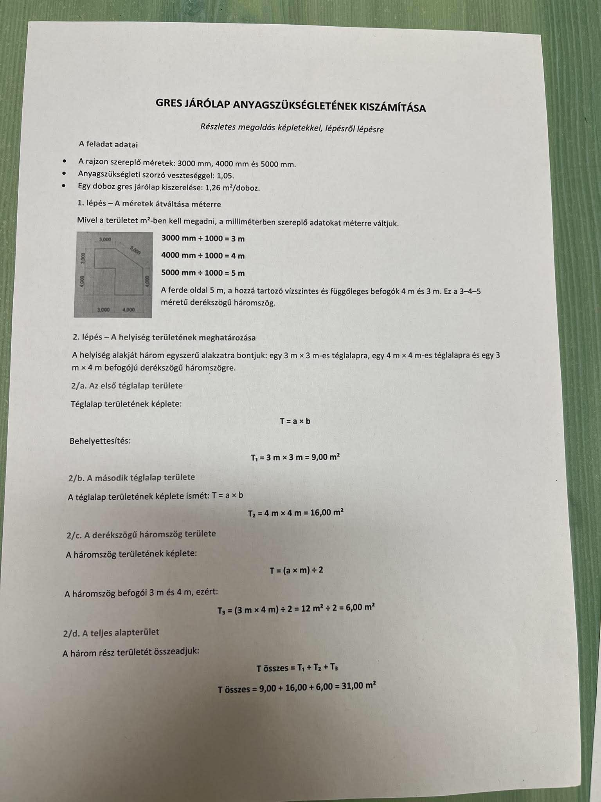
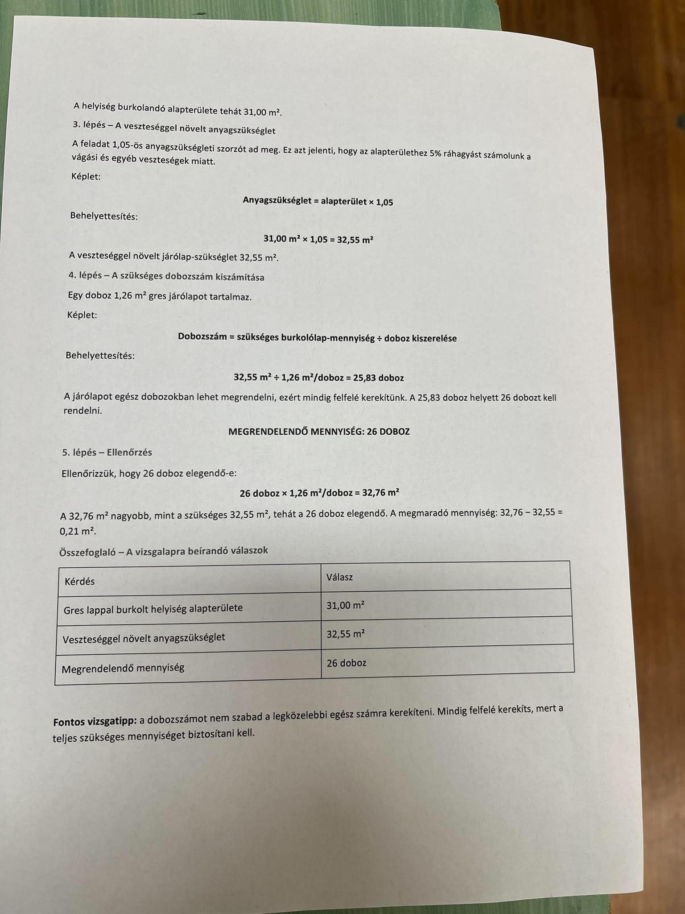

Számítási útmutató · kidolgozott példa
Gres járólap,
kiszámolva lépésről lépésre.
Először bontsd egyszerű alakzatokra a helyiség alaprajzát, majd számold hozzá a vágási veszteséget. A végén a szükséges lapmennyiséget egész dobozra kell felfelé kerekíteni.
Bontsd fel az alaprajzot
Az összetett helyiség alakját három könnyen számolható részre osztjuk. A ferde oldal 5 m, a hozzá tartozó befogók 3 m és 4 m: ez egy 3–4–5-ös derékszögű háromszög.
A méreteket váltsd méterre
A területet négyzetméterben számoljuk, ezért a milliméteres adatokat el kell osztani 1000-rel.
Add össze a részterületeket
A téglalap területe oldal × oldal, a derékszögű háromszögé befogó × befogó ÷ 2.
1. téglalap
2. téglalap
Derékszögű háromszög
Teljes alapterület
Számold hozzá a ráhagyást, majd a dobozokat
A példában 5% veszteséggel számolunk, egy doboz pedig 1,26 m² burkolólapot tartalmaz.
1. Növeld meg a területet 5%-kal
Az 1,05-ös szorzó az alapmennyiséget és az 5% ráhagyást együtt jelenti.
2. Oszd el a doboz kiszerelésével
A dobozok száma nem lehet tört, ezért az eredményt mindig felfelé kerekítsd.
Ennyit kell megrendelni a teljes burkolandó felülethez.
26 × 1,26 = 32,76 m²
32,76 − 32,55 = 0,21 m² marad
Az eredeti levezetés
A magyarázat alapjául szolgáló két lap fotója. Kattints a képre a teljes méretű változat megnyitásához.

